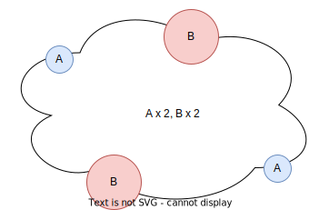

Association¶

Site Interactions¶
Each unique site type per unique molecule is characterized by a numerical index siteid, which (for consistency with C++) starts with 0. In the example above, the indices would go like:
0: site type A on left molecule (multiplicity of 2)
1: site type B on left molecule (multiplicity of 1)
2: site type C on left molecule (multiplicity of 1)
3: site type A on right molecule (multiplicity of 1)
4: site type B on right molecule (multiplicity of 1)
Within a molecule, the numbering of sites is arbitrary, but the mapping cannot be changed once it is defined.
Association can occur when a site can “dock” with another kind of site. In the most common kind of association used to model hydrogen bonding, there are two classes of sites, positive or negative (e and H in Clapeyron.jl). teqp allows for great flexibility in defining the site types and how they are permitted to interact with each other.
The work of Langenbach and Enders (2012) shows how to construct a counting matrix to make the successive substitution faster because not all sites are included in the summation, rather the sites within a molecule are clustered into groups, since all sites of a similar type will have the same association fractions. Thus a counting matrix \(\mathbf{D}\) can be defined, with entries \(D_{IJ}\) for the pair of siteid I and J with the pseudocode
def get_DIJ(I, J):
""" Return the value of an entry in the D_{IJ} matrix
For a given unique site, look at all other sites on all other molecules
"""
_, typei = inv_mapping[I]
_, typej = inv_mapping[J]
if typej in interaction_partners[typei]:
return counts[J]
return 0
in which the dictionary interaction_parameters defines which sites are allowed to interact with each other. The typical alcohol+water family would be modeled with:
interaction_parameters = {'e': ['H'], 'H': ['e']}
and to follow the system considered above, we would have:
inv_mapping = {
0: (0, 'A'),
1: (0, 'B'),
2: (0, 'C'),
3: (1, 'A'),
4: (1, 'B')
}
counts = [2, 1, 1, 1, 1] # multiplicities for each siteid
The definition of the dictionary interaction_parameters would depend on how you want to allow the sites to associate. Sites that are not permitted to interact with each other are removed from the D matrix (are set to zero).
The successive substitution step gives the estimated values with
in which \(\rho_N\) is the number density (molecules per volume) of the entire mixture, \(\Delta_{IJ}\) is the interaction strength (volume per site) between site with siteid of I and that with siteid of J and \(x_{J}\) is the mole fraction of the molecule that site J is found in.
Acceleration can be achieved by taking only a partial step of successive substitution, weighted by \(\alpha\):
This is the method utilized in Langenbach and Enders.
Simplified analysis for pure fluids¶
In the case that there is only one non-zero interaction strength, the mathematics can be greatly simplified. This section is based on the derivations of Pierre Walker. The general result for a pure fluid with N types of sites, which looks like  is as shown in Eq. A39 in Lafitte et al.:
If you have a pure fluid that has two types of sites of arbitrary multiplicity, and no site-site self association (meaning that A cannot dock with A and B cannot dock with B), you can write out the law of mass-action as
and further assuming that \(\Delta=\Delta_{BA}=\Delta_{AB}\) and the simplification of \(\kappa_k=\rho_{\rm N}n_k\Delta\) yields
which can be solved simultaneously from a quadratic equation (see below)
Interaction strength¶
The interaction site strength is a matrix with side length of the number of siteid. It is a block matrix because practically speaking the interaction sites are still about molecule-molecule interactions
Reminder: \(b\), \(\beta\), and \(\epsilon\) values are associated with the molecule, not the site.
CR1 combining rule¶
In the CR1 combining rule:
in which \(i\) is the molecule index associated with siteid \(I\) and the same for \(j\) and \(J\)
Radial distribution function¶
CS: \(g= \frac{2-\eta}{2(1-\eta)^2}\)
KG: \(g= \frac{1}{1 - 1.9\eta}\)
where \(\eta = b_{\rm mix}\rho/4\) in which \(\rho\) is density with units to match the reciprocal of \(b_{\rm mix}\) (so if \(b_{\rm mix}\) is mean covolume per atom, then \(\rho\) is the number density \(\rho_{\rm N}\))
References:
Langenbach & S. Enders (2012): Cross-association of multi-component systems, Molecular Physics, 110:11-12, 1249-1260; https://dx.doi.org/10.1080/00268976.2012.668963
[1]:
# Here is the algebraic solutions to the laws of mass-action for the simplified cases
# covered in Huang & Radosz for the case of a pure fluid with two types
# of sites of arbitrary multiplicity
import sympy as sy
rhoN, Delta, kappa_B, kappa_A, X_A, X_B = sy.symbols('rho_N, Delta, kappa_B, kappa_A, X_A, X_B')
# Definitions of the equations to be solved
# In Eq(), the first arg is the LHS, second is RHS
eq1 = sy.Eq(X_B, 1/(1+kappa_A*X_A))
eq2 = sy.Eq(X_A, 1/(1+kappa_B*X_B))
# The solutions
solns = sy.solve([eq1, eq2], [X_A, X_B])
for soln in solns:
for x in soln:
display(x)
# 2B scheme; one site of type A, one site of type B, no A-A or B-B interactions
print('2B solutions:')
for soln in solns:
print('X_A, X_B:')
for x in soln:
display(x.subs(kappa_A,rhoN*1*Delta).subs(kappa_B,rhoN*1*Delta))
# 3B scheme; one site of type A, two sites of type B, no A-A or B-B interactions
print('3B solutions:')
for soln in solns:
print('X_A, X_B:')
for x in soln:
display(x.subs(kappa_A,rhoN*1*Delta).subs(kappa_B,rhoN*2*Delta))
2B solutions:
X_A, X_B:
X_A, X_B:
3B solutions:
X_A, X_B:
X_A, X_B:
[2]:
import teqp, numpy as np
[3]:
ethanol = {
"a0i / Pa m^6/mol^2": 0.85164,
"bi / m^3/mol": 0.0491e-3,
"c1": 0.7502,
"Tc / K": 513.92,
"epsABi / J/mol": 21500.0,
"betaABi": 0.008,
"sites": ["e","H"]
}
water = {
"a0i / Pa m^6/mol^2": 0.12277,
"bi / m^3/mol": 0.0000145,
"c1": 0.6736,
"Tc / K": 647.13,
"epsABi / J/mol": 16655.0,
"betaABi": 0.0692,
"sites": ["e","e","H","H"]
}
jCPA = {
"cubic": "SRK",
"radial_dist": "CS",
# "combining": "CR1", # No other option is implemented yet
"options": {"self_association_mask": [True, True]},
"pures": [ethanol, water],
"R_gas / J/mol/K": 8.31446261815324
}
model = teqp.make_model({"kind": "CPA", "model": jCPA, "validate": False}, False)
T = 303.15 # K
rhomolar = 1/3.0680691201961814e-5 # mol/m^3
molefracs = np.array([0.3, 0.7])
# Note: passing data back and forth in JSON format is done for convenience and flexibility, not speed
res = model.get_assoc_calcs(T, rhomolar, molefracs)
print('D:', np.array(res['D']))
print('∆:', np.array(res['Delta']))
print('X_A:', np.array(res['X_A']))
print('siteid->(component, name):', res['to_CompSite'])
print('(component, name)->siteid:', res['to_siteid'])
print('multiplicities:', np.array(res['counts']))
D: [[0 1 0 2]
[1 0 2 0]
[0 1 0 2]
[1 0 2 0]]
∆: [[5.85623687e-27 5.85623687e-27 4.26510827e-27 4.26510827e-27]
[5.85623687e-27 5.85623687e-27 4.26510827e-27 4.26510827e-27]
[4.26510827e-27 4.26510827e-27 2.18581242e-27 2.18581242e-27]
[4.26510827e-27 4.26510827e-27 2.18581242e-27 2.18581242e-27]]
X_A: [0.062584 0.062584 0.10938445 0.10938445]
siteid->(component, name): [[0, [0, 'H']], [1, [0, 'e']], [2, [1, 'H']], [3, [1, 'e']]]
(component, name)->siteid: [[[0, 'H'], 0], [[0, 'e'], 1], [[1, 'H'], 2], [[1, 'e'], 3]]
multiplicities: [1 1 2 2]
[4]:
# For completeness, here is the worked Python example that was used to develop the association implementation in teqp:
import collections
import numpy as np
class AssocClass:
def __init__(self, molecules):
# Get all the kinds of sites present
mapping = {}
counts = {}
def sort_sites(sites):
counts = collections.Counter(sites)
out = []
for k in ['B', 'P', 'N']:
if k in counts:
out += [k]*counts[k]
return out
uid = 0
for i, molecule in enumerate(molecules):
for site in sort_sites(set(molecule)):
mapping[(i, site)] = uid
counts[uid] = molecule.count(site)
uid += 1
inv_mapping = {v:k for k,v in mapping.items()} # from superindex to (molecule, site pair)
interaction_partners = {
'B': ('N', 'P', 'B'),
'N': ('P', 'B'),
'P': ('N', 'B')
}
def get_DIJ(I, J):
""" Return the value of an entry in the D_{IJ} matrix
For a given unique site, look at all other sites on all other molecules
"""
_, typei = inv_mapping[I]
_, typej = inv_mapping[J]
if typej in interaction_partners[typei]:
return counts[J]
return 0
Ngroups = len(mapping)
D = np.zeros((Ngroups, Ngroups), dtype=int)
for I in range(Ngroups):
for J in range(Ngroups):
D[I, J] = get_DIJ(I, J)
# Store variables needed for later use
self.D = D
self.counts = counts
self.inv_mapping = inv_mapping
self.Ngroups = Ngroups
# ethanol, water
self.b_Lmol = np.array([0.0491, 0.0145])
self.epsilon_barLmol = np.array([215.00, 166.55])
self.beta = [8e-3, 69.2e-3]
self.b_m3mol = self.b_Lmol/1e3
R = 8.31446261815324 # J/(mol*K)
self.epsilon_K = self.epsilon_barLmol*100/R # K, from (bar*L)/mol * (1e5 Pa/bar) * (Pa / 1000 L), Pa*m^3 = J, then we divide by R to do [J/mol]/[J/mol/K] -> K
def get_xJ(self, moleculemolefracs):
"""
Return the fractions of sites within the mixture, not to be confused
with the mole fractions of molecules within the mixture
"""
counter = 0
xJ = np.zeros((self.D.shape[0],))
for J in range(self.D.shape[0]):
j, sitej = self.inv_mapping[J] # molecule index and site name
xJ[J] = self.counts[J]*moleculemolefracs[j]
counter += xJ[J]
return xJ/counter
def get_bmix(self, molefracs):
return (self.b_m3mol*molefracs).sum()
def get_bij(self, i, j):
""" CR1 """
return (self.b_m3mol[i] + self.b_m3mol[j])/2
def get_epsilon_k_IJ_CR1(self, *, i, j):
""" CR1 """
return (self.epsilon_K[i] + self.epsilon_K[j])/2
def get_beta_IJ_CR1(self, *, i, j):
""" CR1 """
return (self.beta[i]*self.beta[j])**0.5
def get_DeltaIJ(self, T, rhomolar, molefracs, *, i, j):
b_ij = self.get_bij(i, j)
bmix = self.get_bmix(molefracs)
eta = bmix*rhomolar/4 # packing fraction
g_ij = (2-eta)/(2*(1-eta)**3)
beta = self.get_beta_IJ_CR1(i=i,j=j) # dimensionless
eRT = self.get_epsilon_k_IJ_CR1(i=i,j=j)/T # epsilon/(R*T), dimensionless
return g_ij*b_ij*beta*(np.exp(eRT)-1.0) # epsilon_k_IJ is in K, beta_IJ is dimensionless
def get_Delta(self, T, rhomolar, *, molefracs, Ngroups):
Delta = np.zeros((Ngroups, Ngroups))
for I in range(Ngroups):
i, _ = self.inv_mapping[I]
for J in range(Ngroups):
j, _ = self.inv_mapping[J]
Delta[I, J] = self.get_DeltaIJ(T, rhomolar, i=i, j=j, molefracs=molefracs)
return Delta
def X_iter_Langenbach(self, T:float, rhomolar:float, molefracs, init):
"""Iterate with successive substitution to obtain the non-bonded fraction of each site
Args:
T (float): Temperature, K
rhomolar (float): Molar density, mol/m^3
molefracs (array): Mole fractions of the components
init (array): Starting values for X_A
Returns:
array: non-bonded fractions for each site as one big array, indexed by site family
TODO: why do we need mole fractions here and site fractions elsewhere?
"""
# xJ = np.array(self.get_xJ(moleculemolefracs=molefracs), ndmin=2) # row vector
XXJ = np.array([ molefracs[self.inv_mapping[J][0]] for J in range(self.Ngroups)])
N_A = 6.02214076e23 # [1/mol]
Delta = self.get_Delta(T, rhomolar, Ngroups=self.Ngroups, molefracs=molefracs)/N_A
rhoN = rhomolar*N_A # number density, in 1/m^3
Y = np.array(init[:], ndmin=2) # copy, row vector
DD = self.D*Delta # coefficient-wise product
DDX = XXJ*DD # coefficient-wise product
for _ in range(30):
# The naive treatment
summer = 0.0
for J in range(self.Ngroups):
summer += Y[0,J]*XXJ[J]*self.D[:,J]*Delta[:,J]
# Optimized treatment
summer2 = (DDX@Y.T).squeeze()
# print(summer, summer2)
term = rhoN*summer2
Y = 0.5*(Y+1/(1+term))
return Y
def X_A_pure_Langenbach(self, i:int, T:float, rhomolar:float):
"""Calculate the association fractions for a pure fluid
based upon the method of Eq. 20, from
Langenbach & Enders, Mol. Phys.
URL: https://www.tandfonline.com/doi/abs/10.1080/00268976.2012.668963
Args:
int (int): Index of the pure fluid
T (float): Temperature, K
rhomolar (float): Molar density, mol/m^3
molefracs (_type_): Molar fractions, array
TODO: why do we need site fractions here and mole fractions elsewhere?
"""
molefracs = [0]*len(self.b_m3mol)
molefracs[i] = 1
xJ = self.get_xJ(moleculemolefracs=molefracs)
N_A = 6.02214076e23 # [1/mol]
Delta = self.get_Delta(T, rhomolar, Ngroups=self.Ngroups, molefracs=molefracs)/N_A
common = np.array(2*rhomolar*N_A*(xJ@self.D@Delta), ndmin=2).sum(axis=0)
return (np.sqrt(1+2*common)-1)/common
def X_A_pure_HuangRadosz(self, *, i:int, T:float, rhomolar:float, klass:str):
"""Use the explicit solutions from Huang and Radosz to obtain the
association fraction for a pure fluid
Args:
i (int): The fluid index for which the method is being applied
T (float): Temperature, K
rhomolar (float): Molar density, in mol/m^3
klass (str): Association class, one in {'2B','3B','4C'}
Returns:
float: value of X_A
"""
b_ij = b_cubic = self.get_bij(i=i,j=i)
betaABi = self.get_beta_IJ_CR1(i=i,j=i)
R = 8.31446261815324
RT = R*T
epsABi = self.get_epsilon_k_IJ_CR1(i=i,j=i)*R # To get J/mol
eta = b_ij*rhomolar/4 # packing fraction
g_vm_ref = (2-eta)/(2*(1-eta)**3)
DeltaAiBj = g_vm_ref*(np.exp(epsABi/RT) - 1.0)*b_cubic* betaABi
if klass == '2B':
X_A = (-1.0 + (1.0 + 4.0 * rhomolar * DeltaAiBj)**0.5) / (2.0 * rhomolar * DeltaAiBj)
elif klass == '3B':
X_A = ((-(1.0 - rhomolar * DeltaAiBj) + np.sqrt((1.0 + rhomolar * DeltaAiBj)**2 + 4.0 * rhomolar * DeltaAiBj)) / (4.0 * rhomolar * DeltaAiBj))
elif klass == '4C':
X_A = (-1.0 + np.sqrt(1.0 + 8.0 * rhomolar * DeltaAiBj)) / (4.0 * rhomolar * DeltaAiBj)
return X_A
if __name__ == '__main__':
a = AssocClass([('B'), ('P','N','N'), ('P')])
assert(a.D.tolist() == [[1, 1, 2, 1], [1, 0, 2, 0], [1, 1, 0, 1], [1, 0, 2, 0]])
#### 4C water
a = AssocClass([(), ('P','P','N','N')])
T = 303.15
rhomolar = 1/1.7915123921401366e-5
X_A_Clapeyron = 0.07920738195861185 # version 0.5.9
X_A_HR = a.X_A_pure_HuangRadosz(i=1, T=T, rhomolar=rhomolar, klass='4C')
X_A_La = a.X_A_pure_Langenbach(i=1, T=T, rhomolar=rhomolar)[0]
assert(abs(X_A_HR - X_A_Clapeyron) < 1e-10)
assert(abs(X_A_La - X_A_Clapeyron) < 1e-10)
a.X_iter_Langenbach(T=T, rhomolar=rhomolar, molefracs=[0,1], init=np.array([1.0, 1.0]))
### 2B ethanol
a = AssocClass([('P','N'), ()])
T = 303.15
rhomolar = 1/1.7915123921401366e-5
X_A_Clapeyron = 0.020464699705843845 # version 0.5.9
X_A_HR = a.X_A_pure_HuangRadosz(i=0, T=T, rhomolar=rhomolar, klass='2B')
X_A_La = a.X_A_pure_Langenbach(i=0, T=T, rhomolar=rhomolar)[0]
assert(abs(X_A_HR - X_A_Clapeyron) < 1e-10)
assert(abs(X_A_La - X_A_Clapeyron) < 1e-10)
a.X_iter_Langenbach(T=T, rhomolar=rhomolar, molefracs=[1,0], init=np.array([1.0, 1.0]))
a = AssocClass([('P','N'), ('P','P','N','N')])
T = 303.15
print(a.D)
rhomolar = 1/3.0680691201961814e-5
print(a.get_Delta(T, rhomolar, molefracs=[0.3, 0.7], Ngroups=4)/6.02214076e23)
print(a.X_iter_Langenbach(T=T, rhomolar=rhomolar, molefracs=[0.3,0.7], init=np.array([1.0, 1.0, 1, 1])))
[[0 1 0 2]
[1 0 2 0]
[0 1 0 2]
[1 0 2 0]]
[[5.85623687e-27 5.85623687e-27 4.26510827e-27 4.26510827e-27]
[5.85623687e-27 5.85623687e-27 4.26510827e-27 4.26510827e-27]
[4.26510827e-27 4.26510827e-27 2.18581242e-27 2.18581242e-27]
[4.26510827e-27 4.26510827e-27 2.18581242e-27 2.18581242e-27]]
[[0.062584 0.062584 0.10938445 0.10938445]]